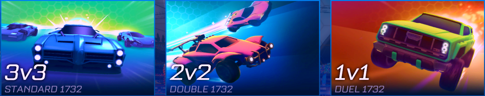
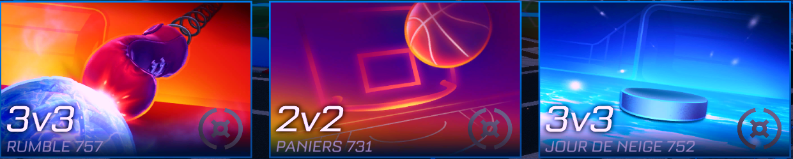
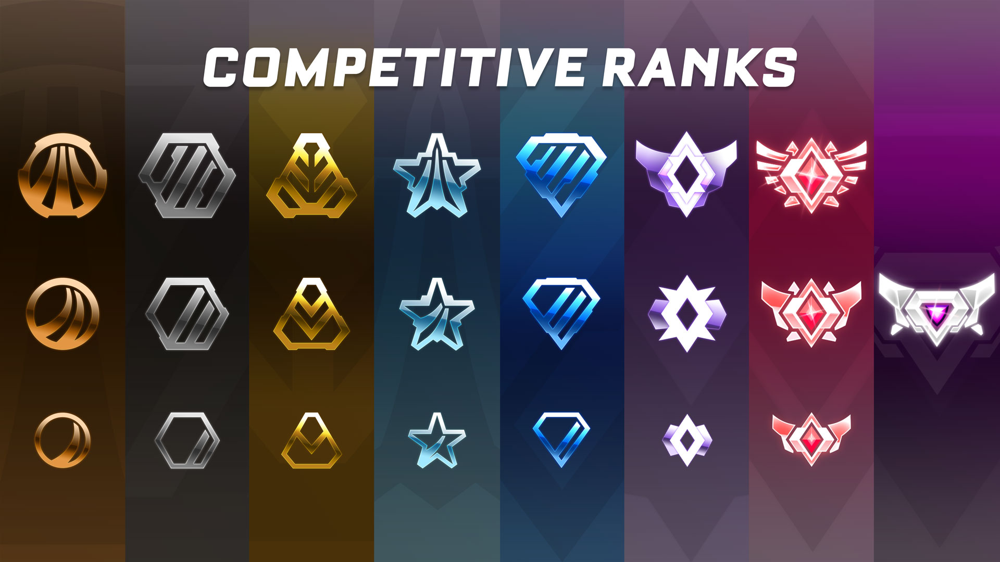

Rocket League

Introduction
Rocket League est un jeu vidéo développé et édité par Psyonix sorti en juillet 2015.
Deux équipes, composées de un à quatre joueurs selon les modes de jeu, conduisant des voitures,
s'affrontent au cours d'un match afin de frapper un ballon et de marquer dans le but adverse.
Les voitures sont équipées de propulseurs/turbos (boost), peuvent sauter, ou s'orienter selon n'importe quels axes.
Ce qui permet de jouer le ballon dans les airs comme au sol délivrant ainsi une expérience de jeu unique.
Actions
########## Saut & Rotation ##########
########## Flip ##########
########## Boost ##########
Mode de jeu
Classique
Il est possible de jouer dans le mode classique (football) en 1vs1, 2vs2 et 3vs3.
Extra
Rocket League propose aussi certains modes extra permettant de diversifier le jeu tels que le mode panier (basketball), le jour de neige (même principe que le football mais le balon est remplacé par un palais qui glisse sur le sol), ou encore le mode rumble (similaire au football mais chaque voiture dispose d'un super pouvoir à intervalles de temps réguliers).
Système de classement
 Beaucoup de jeux compétitifs utilisent un système d'élo afin de pouvoir différencier les joueurs entre eux.Ce méchanisme est aussi utilisé par rocket league. En effet, le joueur débute le jeu avec un élo initial (=600 points), s'il gagne un match, il peut remporter en moyenne 9 points d'élo, s'il perd en revanche, c'est en moyenne 9 points d'élo aussi qui lui sont retiré en fonction de l'élo de son adversaire.
Avec un tel système, plusieurs rangs ont été défini, chacun d'entre eux représente un intervalle fixe de point d'élo. Plus un joueur a un élo élevé, plus son rang augmente.